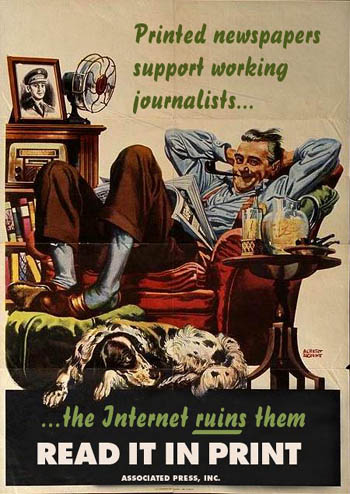

Internet u muzeju i u revoluciji
Iz današnjeg (novosadskog) Dnevnika:
"U Beogradu je u noći između 3. i 4. juna od 18 do dva časa održana "Noć muzeja". Na 22 lokacije održane su tematske izložbe. Publiku i prvenstveno mlade veoma su zainteresovale izložbe u Pedagoškom muzeju „Istorijat i posledice Interneta" i u galeriji „Progres" „Istorijat računara".
Na prvoj, predstavljani su filozofija i istorija Interneta od projekta za virtuelnu realnost sedamdesetih godina prošlog veka do današnjih dana i perspektiva daljeg razvoja Interneta. Prikazani su nastanak Interneta od projekta „Arpanet" na sve do projekta „Internet 2" koji se odvija na univerzitetima u SAD.
U Srbiji je sve počelo na Beogradskom univerzitetu, projektom EARN i priključivanjem na pravi Internet tek 1996. godine. Internet u svetu ima oko 1.050.000,000 korisnika. U Evropi ga koristi 36 odsto stanovnika, a u Srbiji samo 13 odsto građana ima pristup globalnoj mreži. Interes s kojim je propraćena ova izložba pokazuje da i u našoj sredini ubrzano raste broj ljudi koji ne mogu da zamisle život bez „surfovanja", „logovanja" i „pretražvanja" na Internetu.Izložbu „Istorijat računara" organizovao je časopis „PC Pres". Glavni urednik ovog magazina Dejan Roistanović povodom izložbe je ocenio da svaki čovek koji je dugo u ovom poslu ne može a da se s nostalgijom ne seti dobrih starih vremena i prvih računara. Tako se rodila ideja o „Pi-Si muzeju" u kojem je prikazana tridesetogodišnja istorija ličnih računara. Izloženi su "atari ST", IBM PC, "apple 1", "amiga", "commodore 64", "galaksija" i drugi veterani i prethodnici savremog računaratva. Izložba će, zbog velikog interesovanja, biti ponovljena u galeriji „Ozon" u Beogradu od 26. do 30. juna.
U istoriju Interneta svakako spada i vest da je kod nas 3. oktobra 2000. organizovan prvi Internet štrajk. Skoro sam slučajno našla tekst iz Danasa iz tih dana, gde se kaže: "U Jugoslaviji je pokrenut prvi internet štrajk. Do sad je 25 sajtova koji se administriraju iz Jugoslavije podržalo inicijativu Predraga Damjanovića, webmastera sajta www.zastita.co.yu, i povuklo svoje prezentacije sa servera."
To je baš bilo vreme kad se imao cilj. Posle je u daljoj realizaciji nešto zapelo.
Sad, čula sam skoro u jednoj od šarenih emisija od jedne gospođe, da 'svaka šuša ima svoj
sajt'. Što je tačno. I ok.
A kod nas, ako slučajno niste primetili, uveli smo fotografske priloge iz kolekcije 'Savršeno mesto za...'. Submissions Welcome.
 RSS feed
RSS feed
 sadržaji se objavljuju pod
sadržaji se objavljuju pod